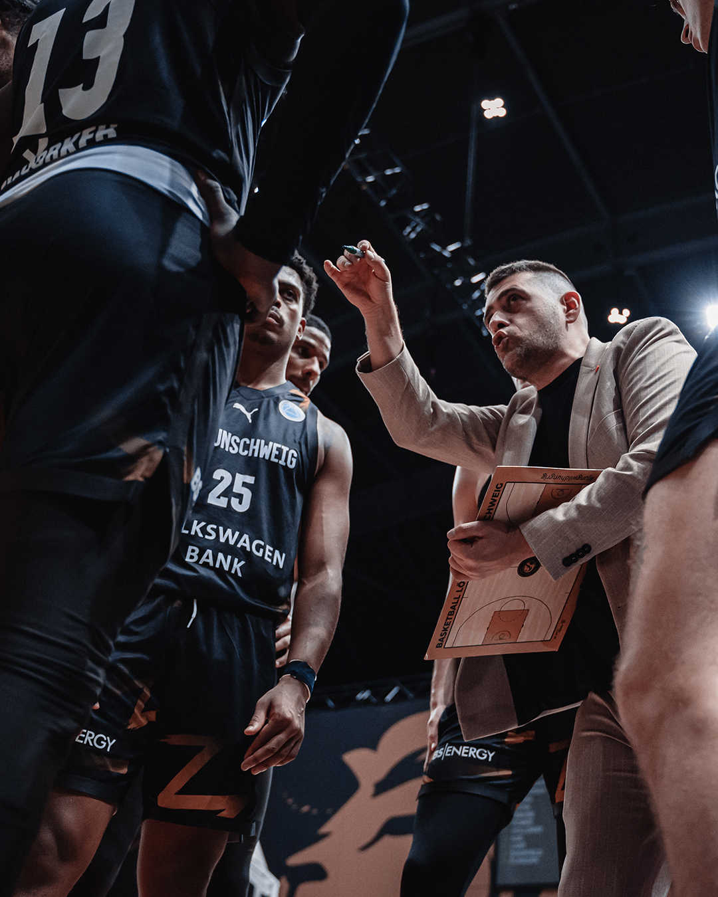

Jul 2025 – Feb 2026
Basketball Löwen Braunschweig — Head Coach
German BBL, Basketball Champions League qualifications and FIBA Europe Cup.
BBL Head CoachOfficial Website · BBL · FIBA Europe Cup · Head Coach
I am a basketball coach with experience across the BBL, GBL, VTB United League and PLK, as well as European competitions including the Basketball Champions League (BCL), EuroCup and FIBA Europe Cup.
My coaching work
I am a professional basketball coach with 20 years of experience across European and international basketball. My recent work has been centred on the German BBL: first in Braunschweig in 2012/13, then continuously from 2020, and as Head Coach of Basketball Löwen Braunschweig in 2025/26.
I believe in clear structure with freedom inside principles — high competitive standards, emotional balance and accountability that protects the team.
Coaching Philosophy
I want my teams to apply pressure across the entire court, disrupt the opponent’s offensive organization and create opportunities through defensive activity, intensity and collective responsibility.
Transition offense is a structured part of my game philosophy. We aim to advance the ball with purpose, recognize advantages early and create scoring opportunities before the defense is set.
In the half court, I focus on creating advantages through spacing manipulation, positioning and decision-making. I adapt our offensive structure to the specific weaknesses of each opponent rather than relying on unnecessary complexity or complicated plays for their own sake.
Problem-solving is one of the defining elements of my coaching approach. It goes beyond identifying and exploiting an opponent’s weaknesses. It also means understanding the problems and limitations within my own team, analysing their causes and finding practical solutions that allow the group to function and compete effectively.
I focus on adapting tactical approaches, player roles and team responsibilities to the circumstances, while making the best possible use of the available resources. My approach combines tactical knowledge, analytical thinking and the ability to translate complex situations into clear, workable solutions.
Head Coaching Experience
Basketball Löwen Braunschweig · 2025/26
My first BBL Head Coaching appointment involved leading a young, low-budget roster competing simultaneously in the easyCredit BBL and the FIBA Europe Cup. The season began with positive competitive momentum before increasingly difficult roster circumstances affected the team’s continuity and performance.
The full season review provides a detailed account of the results, roster availability, coaching decisions and challenges throughout the campaign.
Player development
Player development is a central part of my coaching identity. I work to give young players meaningful responsibilities within a demanding professional environment — individual growth must support the team’s competitive standards, not sit outside them.
I worked with Dennis Schröder, Sananda Fru, David Krämer, David N’Guessan and Jilson Bango during important stages of their development in professional basketball. Player growth is always collective work; my contribution has been to create the tactical clarity, responsibility and everyday standards that allow players to progress.
Leadership & Communication
I believe strong teams are built through trust, communication and shared responsibility. I want players and staff to feel empowered to contribute, make decisions and take ownership of their roles.
My role is to provide direction, establish clear standards and create the conditions in which people can use their strengths and develop. I value open communication with players and staff, and I believe recognition should be shared with the people who contribute to the team’s work — on and off the court.
For me, leadership is not about collecting credit. It is about helping the group function, giving people confidence and bringing individual strengths together in the service of the team.
Coaching Career
German BBL, Basketball Champions League qualifications and FIBA Europe Cup.
BBL Head CoachGerman BBL and FIBA Europe Cup; offensive and defensive coordination, tactical preparation and in-game adjustment.
Greek Basket League and Basketball Champions League.
Greek Basket League.
VTB United League, Kazakhstan National League and FIBA Asia Champions Cup.
The Basketball Tournament, USA.
Greek Basket League.
Greek Basket League.
Greek Basket League.
German BBL.
Greek Basket League.
Greek Basket League.
Greek Basket League and EuroCup.
National-team experience.
Polish DBL.
Greek Basket League.
Coaching experience in the Basketball Champions League (BCL), FIBA Europe Cup, EuroCup and FIBA Asia Champions Cup. Bronze medal at the 2017 FIBA Asia Champions Cup with PBC Astana. Head Coach at The Basketball Tournament (TBT) in the United States.
Selected career milestone: third-youngest Head Coach in Greek League history at age 31.
Selected games
A selection of full games from the BBL and FIBA Europe Cup, including the 2025/26 season. These links are included so my coaching work can be viewed in context.
Interviews & media
Selected interviews, podcasts and media appearances featuring my work and perspective on basketball.
Coaching photography
A selected gallery of game-day leadership, tactical communication and team connection in Braunschweig.

Courtside direction

Timeout preparation

Team communication

Game-day leadership
Public record